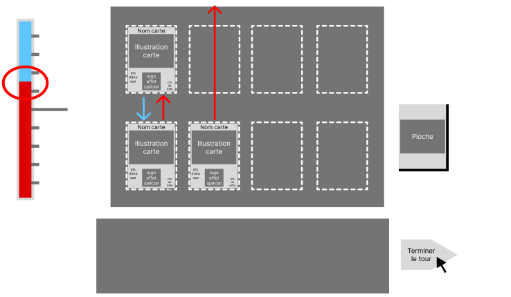

Règles
Lors de votre tour, vous pouver piocher une seule carte et en avoir au maximum 5 dans votre main


A la fin du tour, chaque carte attaque automatique celle en face d'elle (certains effets de carte peuvent altérer ce comportement), et s'il n'y en a pas, le joueur est attaqué à la place
A chaque attaque contre un joueur (l'ennemi ou vous), la jauge de PV varie, la couleur rouge représente vos points de vie, et le bleu ceux de l'ennemi. Celui dont la couleur se vide perd le combat